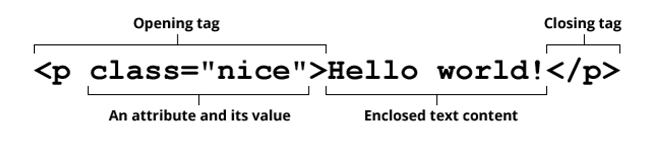
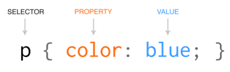

HTML & css
The internet is made up of many things, and web pages make up a big part of it. But how were those web pages made up in the first place? It all starts with two concepts which make the building blocks for web pages; HyperText Markup Language (HTML), and Cascading Style Sheet (CSS). HTML and CSS work together to build the content and the aesthetic to these pages, with HTML being the content and CSS being the aesthetics.
HTML is a type of language for computers to interpret which convey certain aspects onto a web page. The sentences, images, links and many other things are made up using HTML. In order for your computer to differentiate between the different parts of a web page, a “Tag” is used to define what is being called for, and how it should be used. Tags are used to help create an element of code. An element is a block of code which contains a start tag, the content itself, and the end tag. If you wanted to add extra details in an element you would add “attributes”. Attributes get called with a value to add modifiers or extra information to an element. A Basic element with an attribute could look something like this:
Elements can either be displayed as an “inline” or “block” element. Inline elements stay in line with the content they are surrounded with. A link is considered inline since they can stay in line with the rest of the paragraph, like this. Block elements work in the opposite way where they create new blocks for the content. Each of these paragraphs would be block elements since each paragraph is created separately from one another. This is just the basics of HTML, and if you tried to create a web page with just HTML it can be plain. When used in conjunction with CSS, web pages start to appear more interesting to the viewers.
So how does CSS affect the visuals? CSS applies styles to the elements of a page, whether it’s colours, dimensions, positioning, etc. A CSS rule is a guideline of what element is being changed and how that element is changing. With a CSS selector choosing an element, followed with the properties and values encased in curly brackets. An example of a whole CSS rule could look something like this:
The CSS selector, selects which element is going to be stylized, and applies the properties and values onto all the instances where that element is called on. The image above is calling all the paragraphs on a web page. The CSS property is the part of the element that will be changed, in this instance, the colour of all paragraphs are going to be changed. Multiple properties can be applied onto an element, which can affect the element’s dimension, spacing, colour, font size, etc. The properties have to call upon a CSS value, which make up the details of the element. Each property has its own values it can use, and different values may not work for different properties. Such as giving a “width” property, a “colour” value.